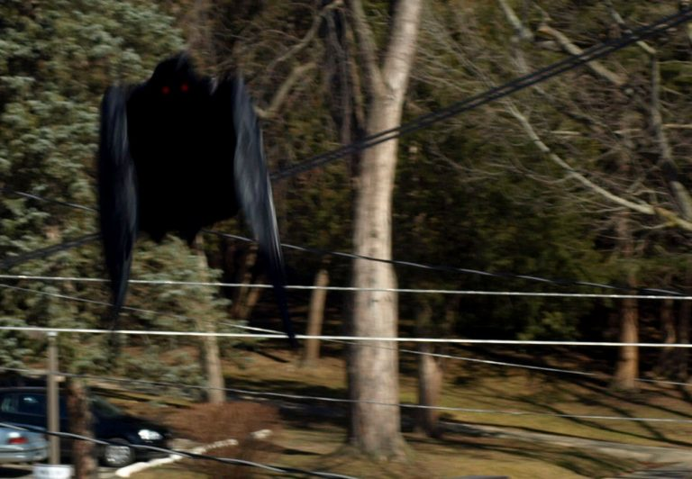

Ubicación: Point Pleasant, West Virginia, Estados Unidos.
Descripción del Avistamiento:
El Mothman es uno de los seres más inquietantes y misteriosos de la criptozoología moderna. Descrito por testigos como una criatura gigantesca con alas de murciélago, ojos brillantes y una figura sombría, el Mothman apareció por primera vez en noviembre de 1966, en Point Pleasant, West Virginia, cerca del Puente Silver. La criatura, que se asemejaba a un hombre con alas, fue vista por varias personas en una serie de encuentros espeluznantes.
Se dice que el Mothman tiene una altura aproximada de 2.4 metros, con alas enormes que le permiten volar rápidamente. Sus ojos rojos y brillantes parecen reflejar una luz que desconcierta a aquellos que lo observan, a menudo dejándolos paralizados de miedo. Los avistamientos fueron acompañados de una sensación de terror inminente y una serie de extraños fenómenos, como interferencias electromagnéticas y fallas en vehículos cerca del lugar.
La leyenda sostiene que el Mothman es una especie de presagio, relacionado con desastres y tragedias. Su aparición en Point Pleasant coincidió con la tragedia del colapso del Puente Silver, que ocurrió en diciembre de 1967, cuando 46 personas perdieron la vida. Desde entonces, el Mothman ha sido asociado con otros eventos catastróficos.
Informe del Testigo:
"Estábamos conduciendo cerca del puente cuando lo vimos... no era un pájaro, ni un murciélago. Tenía una forma humanoide, con alas grandes, y esos ojos, esos ojos rojos... los recuerdo incluso ahora. Sentí como si algo terrible fuera a ocurrir."
Hipótesis y Teorías:
El origen del Mothman sigue siendo un misterio. Algunos investigadores creen que se trata de un ser
extraterrestre, mientras que otros sugieren que podría ser una criatura de otro plano dimensional,
enviada como advertencia de futuros desastres. Otra teoría más amplia es que el Mothman podría ser un
simple mito urbano, nacido del miedo colectivo en una época de tensiones sociales y miedo al cambio.
Los informes más recientes sugieren que la criatura sigue siendo avistada en la zona de Point Pleasant,
donde algunos creen que su presencia predice nuevos eventos catastróficos.
Enlace a los Archivos X:
Las autoridades locales y los investigadores de lo paranormal continúan elucubrando sobre el significado de los avistamientos del Mothman, sin llegar a una conclusión definitiva. Sin embargo, para muchos, la sombra alada sigue siendo una advertencia ominosa, una criatura ligada a la fatalidad y la oscuridad.